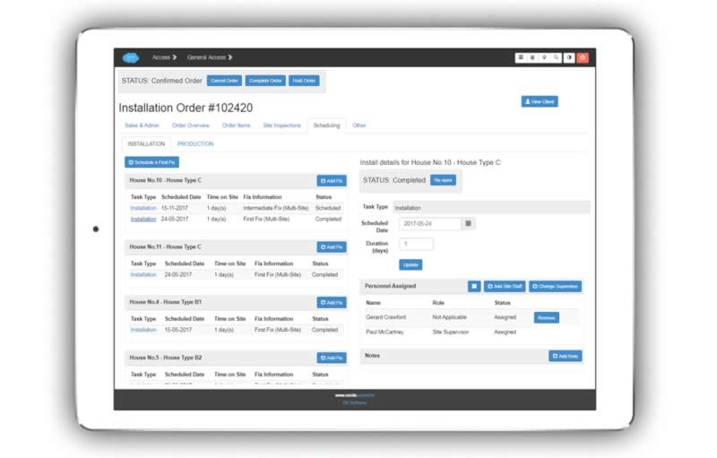
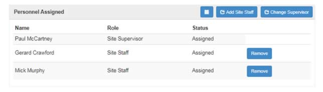

Scheduling¶
The ‘Scheduling’ tab enables you to quickly schedule site visits for more detailed survey, and installation, whether as a single fix, or multiple fixes. It enables you to quickly specify the team that will carry out the installation, which will automatically update their calendars with relevant details about the job.
Single Fix installations¶
Scheduling an installation in one fix is done from the installation order view, on the ‘Scheduling’ tab. Here you can:
Check calendar for available dates
Specify whether one fix or multiple fix
Specify whether the date is confirmed or provisional
Note the days expected on site (changeable to weeks)
Specify whether a preliminary site site survey needed (this is an optional field)
Multiple Fix installations¶
If it is a multiple fix installation, you add additional fixes after the first fix.

Installations at Multiple Site Locations¶
Multiple locations are also easy to record (as well as multiple fixes). Just click ‘Schedule First Fix’ for a new location, and click the ‘Add Fix’ button for an additional fix at the location.
Entering Fix Details¶
Click on the highlighted ‘task type’ in the left pane to bring up the corresponding details in the right pane that you would like to view or work with.
Assigning personnel to the job¶
A team may be automatically assigned when you schedule the installation. Alternatively, use the buttons to update the team.
Scheduling Production / Fabrication¶
You can choose to automatically speficy that production should begin a set number of days before installation. Thus when you schedule an installation, production is also scheduled automatically.
Alternatively you can choose to schedule production completely separately to the installation.